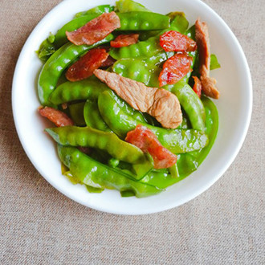
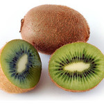
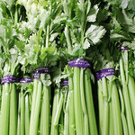
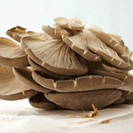
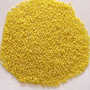
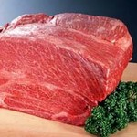
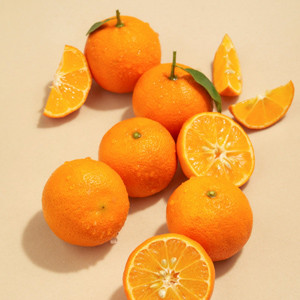

登录
注册
微博登录
QQ登录
首页
菜谱大全
家常菜谱
家常菜
凉菜
素食
晚餐
私家菜
热菜
海鲜
孕妇
早餐
午餐
甜品点心
汤粥
宝宝食谱-婴儿食谱
糕点主食
微波炉
中华菜系
川菜
粤菜
东北菜
湘菜
鲁菜
浙菜
湖北菜
清真菜
各地小吃
四川小吃
广东小吃
北京小吃
陕西小吃
外国菜谱
韩国料理
日本料理
法国菜
意大利餐
烘焙
蛋糕面包
饼干配方
甜品点心
厨房百科
摆盘围边
烹饪技巧
生活妙招
美食专题
食材百科
蔬菜
水果
谷类
饮食健康
饮食健康
饮食小常识
美容瘦身
食品安全
养生妙方
饮食禁忌
中医保健
母婴健康饮食
饮食新闻
功能性调理
清热去火
减肥
祛痰
乌发
滋阴补肾
健脾开胃
消化不良
清热解毒
补阳壮阳
增肥
人群膳食
孕妇
老人
产妇
哺乳期
青少年
幼儿
学龄期儿童
疾病调理
糖尿病
高血压
痛风
胃炎
痔疮
更年期
甲状腺
脏腑调理
感冒
补肾
阳痿早泄
补血
便秘
腹泻
活血化瘀
美食菜单
家居馆
美食达人
菜谱视频
手机版下载
自动收缩
回到顶部
今日晚餐推荐：圣诞夜，来份丰盛晚宴
砂锅烤鸡
吃个烤鸡过圣诞，美味无比
补充蛋白
带鱼烧白萝卜
软嫩香滑，鲜香味浓
补充能量
花菜炒肉片
荤素搭配，清新爽脆
营养均衡
今日下午茶推荐：圣诞专属下午茶来袭
布朗尼蛋糕
口感松软，孩子抢着吃
补充能量
圣诞红丝绒蛋糕
好吃又好看，让孩子爱上过节
补充能量
圣诞姜饼
饼干清香，有趣又好吃
补充能量
今日早餐推荐：让有颜有料的早餐开启一天的美好
圣诞老人馒头
造型精致，增添节日气氛
补充能量
无油韭菜鸡蛋饼
有菜有蛋，营养满满
润肠通便
鱼肉烧卖
做法简单，肉鲜味美
营养丰富
今日夜宵推荐：寒冬深夜，让美食治愈你

荷兰豆炒肉片腊肠
快手又营养，做法超简单
营养均衡
茄汁通心面
酸甜开胃，增添饱腹感
营养全面
自制薯条
外酥里嫩，大人小孩都爱
益智安神
今日午餐推荐：圣诞午餐，食材丰富一点
萝卜羊肉煲
羊肉酥烂，萝卜清甜
驱寒暖胃
脆皮玉子豆腐
外酥里嫩，香辣开胃
补充蛋白
小炒牛肉
荤素搭配，营养满分
营养均衡
早餐时间
午餐时间
下午茶时间
晚餐时间
夜宵时间
4:00
10:00
14:00
16:00
21:00
4:00
十二月，适度进补，动静结合
更多食材 >
水果
梨
山楂
橙
苹果

猕猴桃
甘蔗
香蕉
柚子
蔬菜
冬笋

芹菜
胡萝卜
大白菜
莴笋
菜花
油麦菜

平菇
五谷
板栗
黑豆
核桃

小米
燕麦
糯米
桂圆(干)
玉米面(黄)
生鲜
排骨
虾

羊肉
带鱼
牛肉
鱿鱼
乌骨鸡
腊肉
每小时最热门菜谱
台湾卤肉（快手版）
127 评论 24318 人气
杜杜明明没肚肚
11步 / 大概60分钟
炖 / 咸鲜味
止疼
酱油饭
66 评论 30706 人气
童尐果
8步 / 大概10分钟
炒 / 家常味
高血压
咸蛋黄虾仁豆腐
128 评论 42461 人气
开心果子365Q
13步 / 大概5分钟
其它工艺 / 家常味
清热解毒
酱腌黄瓜
122 评论 29379 人气
花凝雨嫣
13步 / 大概一天
腌 / 酱香味
防癌
茄汁豆腐
43 评论 25022 人气
美乐猪
10步 / 大概5分钟
炸 / 酸甜味
抵抗力
椒香五花肉
138 评论 40537 人气
孩妈@妮妮
24步 / 大概15分钟
煮 / 酸辣味
青红椒炒虾仁
33 评论 24209 人气
美美家的厨房
8步 / 大概15分钟
炒 / 家常味
热门栏目推荐
最新菜谱
家常菜
凉菜
素食
早餐
乌发
高血压
烘焙
韩国料理
川菜
粤菜
湘菜
甜点
进入菜谱大全 >>
最新
| 最热：
一小时
今日
七天
更多菜谱 >
健康新闻
更多健康资讯 >
食品安全
冻鱼保鲜保营养吗?
哪些啤酒谣言还在飞?
凉拌或油炸四季豆易中毒
文化典故
南方春节食物的寓意
轻食主义到底是什么呢?
腊八除了吃腊八粥还吃什么？
健康指南

暴走的维生素之王——地中海红柠檬
贴秋膘正确姿势：刷广发信用卡半价
网红小姐姐和健身达人推崇的0脂肪
新鲜资讯
野生海参价格贵吗?野生海参和养殖
新鲜海参一般卖多少钱?鲜海参买回
郝老板海参拥有神奇作用?营养价值
站长统计


 京公网安备11010802026928
京公网安备11010802026928